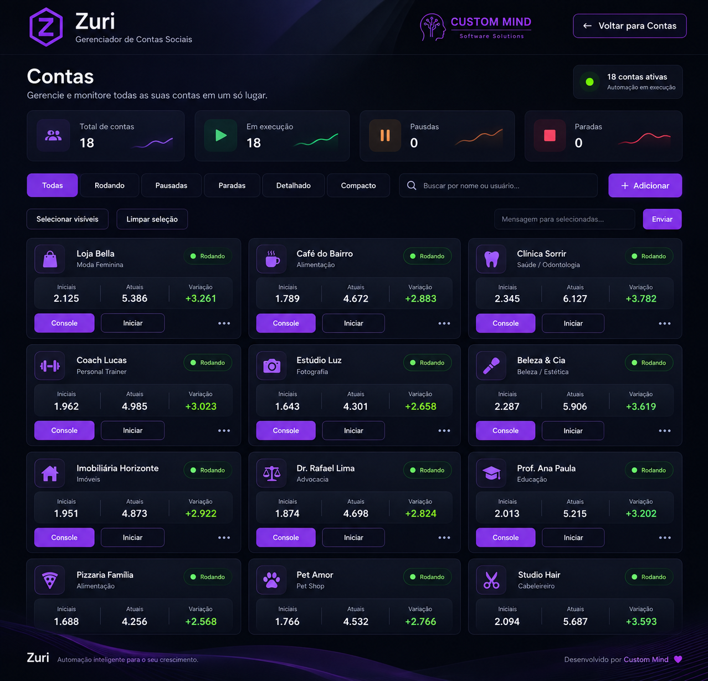
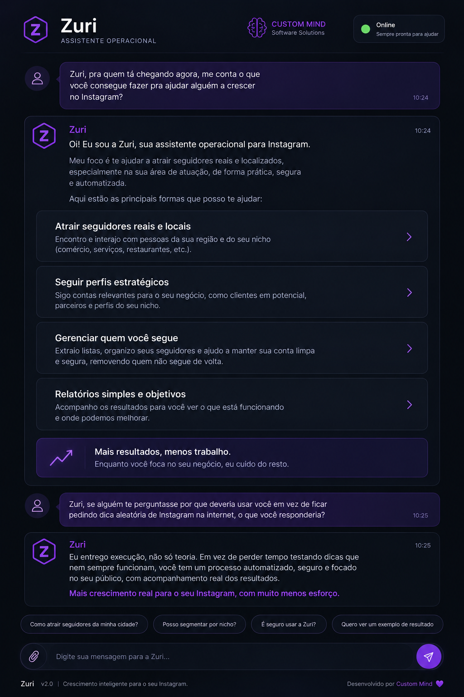

Público com direção
Nicho, localização, perfis, listas e sinais de interesse ajudam a orientar a descoberta.
A Zuri combina orientação e execução em um só lugar: ajuda a definir critérios, transformar decisões em comandos e acompanhar rotinas de descoberta com contexto, histórico e controle.

Em vez de depender de dicas soltas e tarefas repetidas manualmente, a Zuri transforma critérios de público e objetivos em uma operação acompanhável. A estratégia continua humana; a execução ganha estrutura.
Nicho, localização, perfis, listas e sinais de interesse ajudam a orientar a descoberta.
A assistente reduz a distância entre decidir o próximo passo e transformar essa decisão em ação suportada.
A operação pode ser distribuída com ritmo e limites definidos, em vez de ações aleatórias e concentradas.
Contas, evolução e estado das rotinas ficam visíveis para facilitar revisão e ajuste.
As duas telas reais mostram os lados complementares da Zuri: a central que acompanha contas e a interface conversacional que transforma orientação em próximos passos operacionais.
O painel reúne contas, status e indicadores em uma mesma visão para saber o que está ativo, acompanhar evolução e entrar no console quando algo precisa de atenção.
A interface conversacional concentra orientação, comandos e contexto. O objetivo é reduzir o trabalho entre descobrir o que fazer e colocar a rotina em prática.

A Zuri faz mais sentido quando já existe clareza suficiente sobre quem você quer alcançar e o que deseja testar. A automação entra depois da direção.
Define-se o tipo de descoberta ou rotina que precisa ganhar consistência.
Público, listas, perfis e limites orientam a operação.
A decisão vira uma ação suportada dentro da assistente.
A rotina roda com cadência e estado acompanháveis.
O resultado observado ajuda a ajustar filtros, ritmo e prioridades.
A Zuri organiza tarefas repetitivas, mas não substitui oferta, posicionamento, conteúdo ou julgamento. A operação continua precisando de direção.
O ritmo pode ser planejado para evitar uma operação concentrada e pouco natural.
A central existe para acompanhar o que está rodando, não para esconder a automação em segundo plano.
A operação inclui controles de acesso e estado da sessão necessários para manter as contas organizadas.
Critérios e rotinas podem ser ajustados conforme o que acontece no perfil e na própria plataforma.
Este foi um resultado observado em um perfil atendido e serve como registro de um caso específico. A Zuri organizou uma estratégia de descoberta e execução; não substituiu posicionamento, oferta, conteúdo ou atendimento.
Resultado depende de nicho, oferta, perfil, conteúdo, público, execução e comportamento da plataforma. Não é promessa de desempenho futuro.
O valor da Zuri está em organizar execução. Resultado continua dependendo do que o perfil oferece e de quem encontra essa oferta.
Significa que ela não fica apenas em recomendações. Dentro das funções suportadas, ajuda a transformar critérios e decisões em comandos e rotinas acompanháveis.
Não. Resultados dependem de nicho, perfil, oferta, conteúdo, público, execução e comportamento da plataforma.
Não. Ela organiza descoberta e acompanhamento. Proposta, conteúdo, oferta e atendimento continuam determinantes para converter atenção em negócio.
Sim. A central mantém contas, status e rotinas visíveis para que critérios e ritmo possam ser revisados quando necessário.
Uma conversa sobre perfil, público e objetivo já ajuda a entender se existe estratégia suficiente para transformar descoberta em uma operação consistente.
Avaliar meu perfil ↗